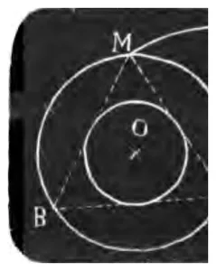

Book X: Determination of Centers & Napoleon’s Problem¶
Libro Decimo: Dei centri (§§ 143–150)
Finding centers of circles, arcs, polygons, and three-point circumcircles without a straightedge (§§ 143–150, pp. 82–86, folios 0107–0111): opening with Mascheroni’s celebrated solution to Napoleon's Problem (§ 143) and closing with the circumcenter through three arbitrary points (§ 150) and Mascheroni–Steiner minimal-instrument duality.
§§ 143–145: Center of a Given Circle (Napoleon’s Problem)
BOOK TENTH — OF CENTERS

§§ 146–149: Inscribing & Circumscribing Circles to Polygons
146. Problem. To circumscribe and inscribe a circle to a given equilateral triangle (fig. 72).
§ 150: Circumcenter Through Three Points & Steiner Duality
150. Problem. To find the center \(S\) of a circle (fig. 75) passing through three given points \(PQR\).